Critiques et avis
Nous avons effectué une sélection des films les mieux notés dans trois genres différents : Drame, Comédie et Film d'horreur. Ces genres sont parmi les préférés du public et les films les plus vus appartiennent à ces catégories.
Drame
Kill Bill
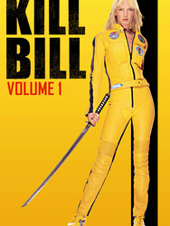Dans la petite chapelle de Two Pines perdue au milieu du désert, à El Paso (Texas), alors que se déroule la répétition d'une cérémonie de mariage, des assassins surgissent et tirent impitoyablement et sans raison apparente sur toutes les personnes présentes.
Forest Gump
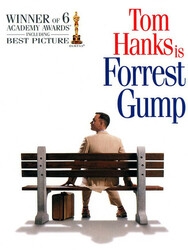Forrest Gump est le symbole d'une époque, un candide dans une Amérique qui a perdu son innocence.
Merveilleusement interprété par Tom Hanks, Forrest vit une série d'aventures, de l'état d'handicapé physique à celui de star du football, de héros du Vietnam au roi de la crevette, des honneurs de la Maison Blanche au bonheur d'une grande histoire d'amour.
Son cœur dépasse les limites de son Q.I.
The dark knight
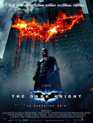Batman est plus que jamais déterminé à éradiquer le crime organisé qui sème la terreur en ville.
Epaulé par le lieutenant Jim Gordon et par le procureur de Gotham City, Harvey Dent, Batman voit son champ d'action s'élargir.
La collaboration des trois hommes s'avère très efficace et ne tarde pas à porter ses fruits jusqu'à ce qu'un criminel redoutable vienne plonger la ville de Gotham City dans le chaos.
Titanic
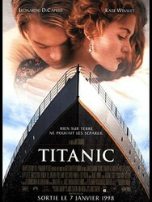Il raconte l'histoire fictive de deux jeunes passagers du paquebot Titanic en avril 1912.
L'une, Rose, est une passagère de première classe qui tente de se suicider pour se libérer des contraintes imposées par son entourage, et le second, Jack, un artiste pauvre, est embarqué à la dernière minute en troisième classe pour retourner aux États-Unis.
Ils se rencontrent par hasard lors de la tentative de suicide de Rose et vivent une histoire d'amour vite troublée par le naufrage du navire.
Mr. & Mrs. Smith
Mr et Mrs Smith forment un couple tout ce qu'il y a de plus banal.
Pourtant, Mr Smith est exécuteur pour une organisation secrète et Mrs Smith, tueuse à gage vendant ses services aux plus offrants.
Ignorant chacun les activités de leur cher et tendre, ils vont pourtant se retrouver en compétition sur le même contrat : s'éliminer l'un l'autre.
Films de Comédie
Là-haut
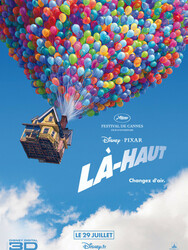Quand Carl, un grincheux de 78 ans, décide de réaliser le rêve de sa vie en attachant des milliers de ballons à sa maison pour s'envoler vers l'Amérique du Sud, il ne s'attendait pas à embarquer avec lui Russell, un jeune explorateur de neuf ans, toujours très enthousiaste et assez envahissant.Ce duo totalement imprévisible et improbable va vivre une aventure délirante qui les plongera dans un voyage dépassant l'imagination.
The Mask
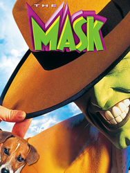Stanley Ipkiss, modeste employé de banque, passionné par l'univers de Tex Avery, trouve un masque ancien aux pouvoirs surnaturels. Il est néanmoins partagé entre devenir cette créature verte sûre d'elle ou rester le timide Stanley Ipkiss, incapable d'aborder la magnifique chanteuse de cabaret Tina Carlyle.Au milieu de cette confusion, Stanley doit faire face à des situations comiques et chaotiques, jonglant entre son alter ego audacieux et sa personnalité réservée. Finalement, il apprendra à trouver un équilibre entre ses deux côtés et à embrasser sa véritable nature.
Toy Story
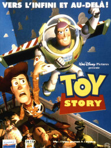Quand le jeune Andy quitte sa chambre, ses jouets se mettent à mener leur propre vie sous la houlette de son pantin préféré, Woody le cow-boy.
Andy ignore également que chaque anniversaire est une source d'angoisse pour ses jouets qui paniquent à l'idée d'être supplantés par un nouveau venu -- ce qui arrive quand Buzz l'Éclair est offert à Andy.
Cet intrépide aventurier de l'espace, venu d'une lointaine galaxie, va semer la zizanie dans ce petit monde.
Alladin
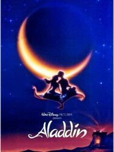Le jeune et pauvre Aladdin vit avec son singe Abu dans les rues et est obligé de voler des aliments pour se nourrir.
Un jour, il fait la connaissance de la princesse Jasmine, fille du Sultan, venue se promener incognito dans les quartiers populaires, à la recherche d'aventure. Entre les deux jeunes gens, le coup de foudre est immédiat. Mais ils sont rapidement rattrapés par les gardes du sultan.
Charlie et la chocolatrie
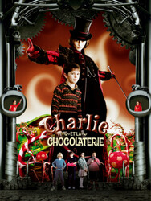Issu d'une famille modeste, le jeune Charlie doit travailler pour aider les siens et doit économiser chaque penny durement gagné. Friand de sucreries, il décide de participer à un concours organisé par l'intimidant Willy Wonka, à la tête de la chocolaterie de la ville.
Celui ou celle qui trouvera l'un des cinq tickets d'or que Willy a dissimulé dans les barres de chocolat de sa fabrique remportera l'équivalent d'une vie de sucreries !
Films d'Horreur
Sixième sens
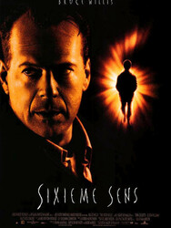Connu pour son engagement et ses résultats remarquables, le docteur Malcolm Crowe, psychologue pour enfants, reçoit des mains du maire une lettre de félicitations. Le médecin fête l'événement avec son épouse lorsqu'un de ses anciens patients fait irruption dans son appartement, une arme à la main. Le forcené blesse Malcolm d'un coup de feu à bout portant avant de se donner la mort.
Suspiria
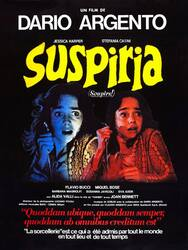La jeune danseuse américaine Susie Bannion arrive à Berlin dans les années 1970 pour auditionner à la compagnie de danse Helena Markos. Lorsqu'elle obtient le rôle-titre, la femme qu'elle remplace accuse la directrice de la troupe d'être une sorcière. Pendant ce temps, un psychothérapeute et une membre de la troupe découvrent de sombres secrets lorsqu'ils effectuent des recherches dans les chambres souterraines du studio.
Scream

Casey Becker, une belle adolescente, est seule dans la maison familiale. Elle s'apprête à regarder un film d'horreur, mais le téléphone sonne. Au bout du fil, un tueur en série la malmène, et la force à jouer à un jeu terrible: si elle répond mal à ses questions portant sur les films d'horreur, celui-ci tuera son copain. Sidney Prescott sait qu'elle est l'une des victimes potentielles du tueur de Woodsboro. Celle-ci ne sait plus à qui faire confiance.
Triangle
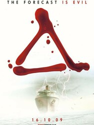Une bande d'amis part en voilier dans les Bermudes. Ils sont pris dans une énorme tempête et perdent le contrôle du bateau, qui part à la dérive. Ils trouvent refuge sur un navire désert où le temps semble s'être arrêté. Bien vite, ils ont l'étrange sensation qu'une menace les guette.
Silent Hill
De plus en plus souvent, la petite Sharon rêve d'une ville abandonnée, Silent Hill. Sa mère, Rose, décidée à comprendre l'étrange mal dont souffre son enfant, décide de l'accompagner sur place. Alors qu'elles pénètrent dans cet univers lugubre, Sharon disparaît. Rose se lance à sa poursuite, mais se rend vite compte que ce lieu étrange ne ressemble à rien de normal.